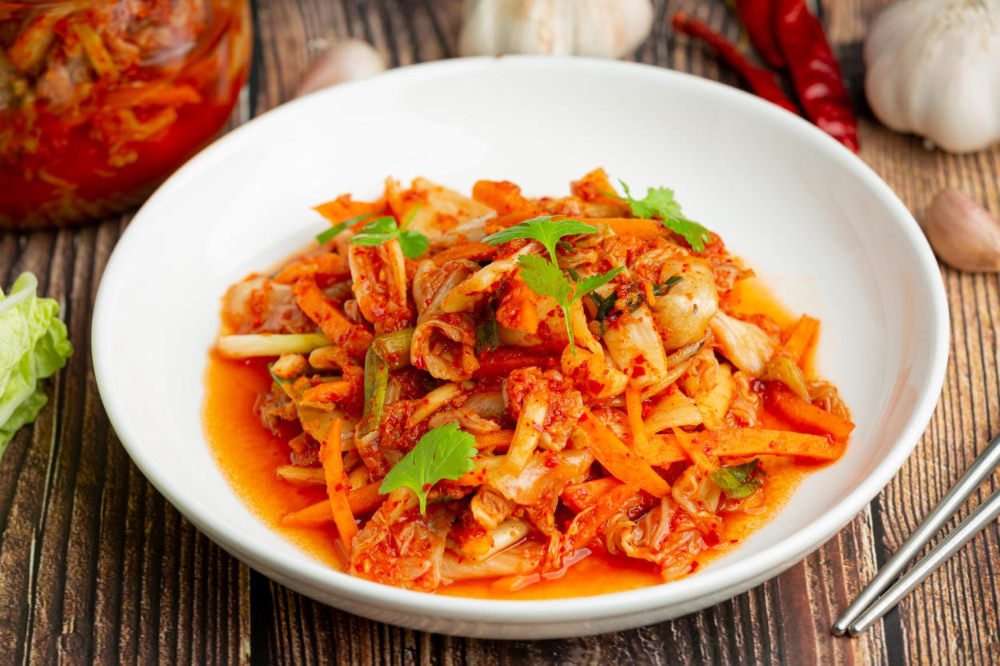
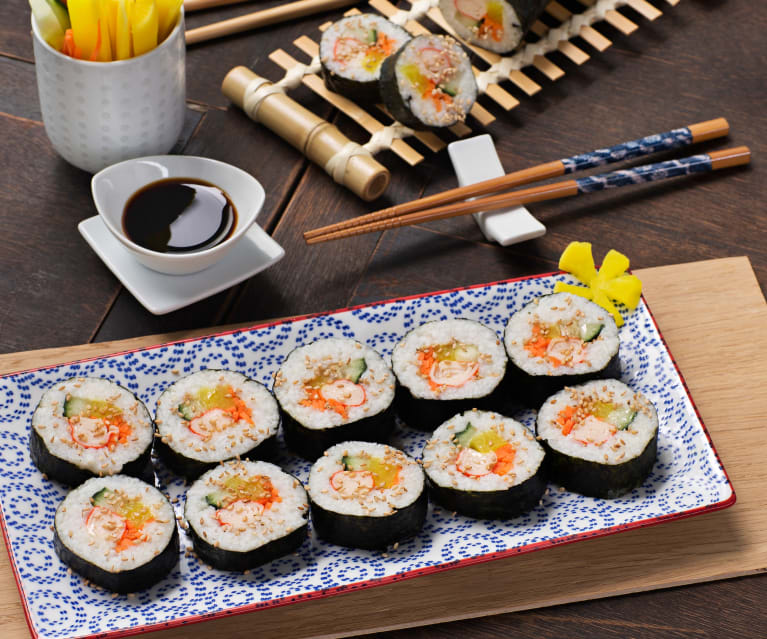

Kimchi
No es un plato en sí, sino un acompañamiento . Se trata de vegetales sazonados con varias especias, incluídas ají, que luego se dejan fermentar por un tiempo antes de comerse. Suele estar siempre de acompañamiento en la mesa.
Kimbap
Una opción no picante y probablemente la más barata de comida coreana es el kimbap. Rollos de arroz envueltos en alga kim. Hay rellenos solo de vegetales, y otras opciones con diferentes carnes, incluso camarones.
